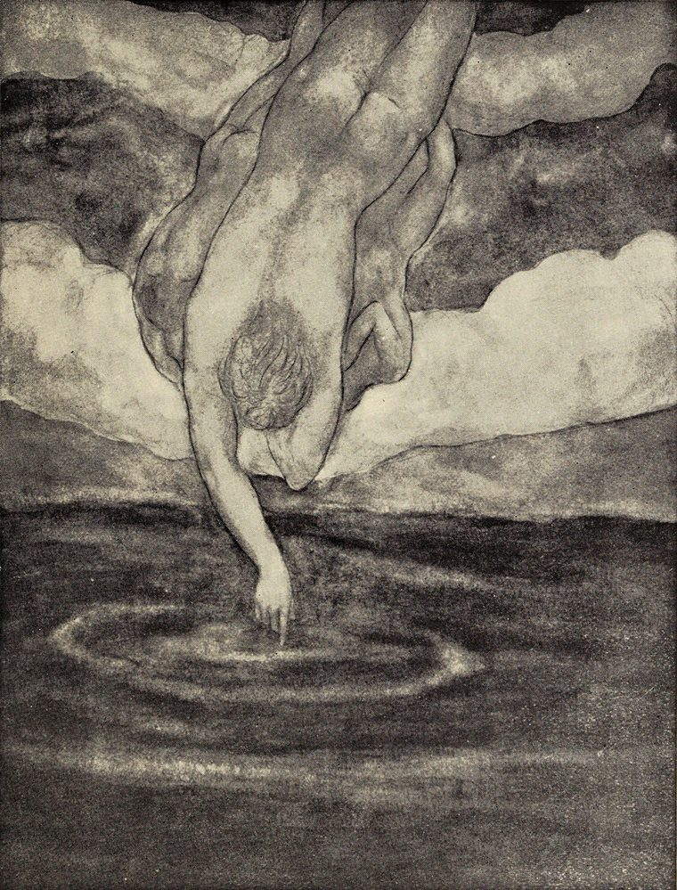

1L'arrivée du navire
Almustafa, l’élu et le bien-aimé, qui fut une aube pour son propre jour, avait attendu douze ans dans la cité d’Orphalèse le navire qui devait revenir et le ramener vers l’île de sa naissance.
Et la douzième année, le septième jour d’Ielool, le mois des moissons, il gravit la colline hors des murs de la cité et regarda vers la mer ; et il vit son navire qui venait avec la brume.
Alors les portes de son cœur s’ouvrirent toutes grandes, et sa joie s’envola loin sur la mer. Et il ferma les yeux et pria dans les silences de son âme.
Mais tandis qu’il descendait la colline, une tristesse le saisit, et il pensa en son cœur :
Comment partirais-je en paix et sans chagrin ? Non, ce n’est pas sans une blessure de l’esprit que je quitterai cette cité. Longs furent les jours de douleur que j’ai passés entre ses murs, et longues les nuits de solitude ; et qui peut se séparer de sa douleur et de sa solitude sans regret ?
J’ai semé dans ces rues trop de fragments de mon esprit, et trop nombreux sont les enfants de mon désir qui marchent nus parmi ces collines, et je ne puis m’éloigner d’eux sans un fardeau et sans une peine.
Ce n’est pas un vêtement que je dépouille en ce jour, mais une peau que je déchire de mes propres mains.
Ni une pensée que je laisse derrière moi, mais un cœur que la faim et la soif ont rendu doux.
Pourtant je ne puis m’attarder davantage.
La mer qui appelle à elle toutes choses m’appelle, et je dois m’embarquer.
Car rester, même si les heures brûlent dans la nuit, c’est geler, se cristalliser et se figer dans un moule.
Je voudrais emporter avec moi tout ce qui est ici. Mais comment le pourrais-je ?
Une voix ne peut emporter la langue et les lèvres qui lui ont donné des ailes. Seule elle doit chercher l’éther.
Et seul, et sans son nid, l’aigle volera à travers le soleil.
Or quand il atteignit le pied de la colline, il se tourna de nouveau vers la mer, et il vit son navire qui approchait du port, et sur la proue les marins, les hommes de son propre pays.
Et son âme cria vers eux, et il dit :
Fils de ma mère antique, vous qui chevauchez les marées,
Que de fois vous avez navigué dans mes rêves. Et voici que vous venez dans mon éveil, qui est mon rêve plus profond.
Je suis prêt à partir, et mon ardeur, toutes voiles dehors, attend le vent.
Encore un souffle seulement dans cet air immobile, encore un seul regard d’amour jeté en arrière,
Et puis je me tiendrai parmi vous, marin parmi les marins. Et toi, vaste mer, mère sans sommeil,
Toi qui seule es paix et liberté pour la rivière et le ruisseau,
Encore un détour seulement pour ce ruisseau, encore un murmure dans cette clairière,
Et puis je viendrai à toi, goutte sans limites vers un océan sans limites.
Et tandis qu’il marchait, il vit de loin des hommes et des femmes quitter leurs champs et leurs vignes et se hâter vers les portes de la cité.
Et il entendit leurs voix qui appelaient son nom, et qui criaient de champ en champ, s’annonçant les uns aux autres la venue de son navire.
Et il se dit en lui-même :
Le jour de la séparation sera-t-il le jour du rassemblement ?
Et dira-t-on que mon soir était en vérité mon aube ?
Et que donnerai-je à celui qui a laissé sa charrue au milieu du sillon, ou à celui qui a arrêté la roue de son pressoir ? Mon cœur deviendra-t-il un arbre lourd de fruits, pour que je les cueille et les leur donne ?
Et mes désirs couleront-ils comme une fontaine, pour que je remplisse leurs coupes ?
Suis-je une harpe, pour que la main du Puissant me touche, ou une flûte, pour que son souffle me traverse ?
Je suis un chercheur de silences, et quel trésor ai-je trouvé dans les silences, que je puisse dispenser avec assurance ?
Si c’est ici mon jour de moisson, dans quels champs ai-je semé la graine, et en quelles saisons oubliées ?
Si c’est là vraiment l’heure où je lève ma lanterne, ce n’est pas ma flamme qui y brûlera.
Vide et obscure je lèverai ma lanterne,
Et le gardien de la nuit la remplira d’huile, et c’est lui aussi qui l’allumera.
Voilà ce qu’il dit en paroles. Mais beaucoup demeura non dit en son cœur. Car lui-même ne pouvait dire son secret le plus profond.

Et quand il entra dans la cité, tout le peuple vint à sa rencontre, et tous l’appelaient comme d’une seule voix.
Et les anciens de la cité s’avancèrent et dirent :
Ne t’éloigne pas encore de nous.
Tu as été un midi dans notre crépuscule, et ta jeunesse nous a donné des rêves à rêver.
Tu n’es pas parmi nous un étranger, ni un hôte, mais notre fils et notre bien-aimé.
Ne laisse pas encore nos yeux avoir faim de ton visage.
Et les prêtres et les prêtresses lui dirent :
Ne laisse pas maintenant les vagues de la mer nous séparer, ni les années que tu as passées au milieu de nous devenir un souvenir.
Tu as marché parmi nous tel un esprit, et ton ombre a été une lumière sur nos visages.
Nous t’avons beaucoup aimé. Mais notre amour était sans paroles, et de voiles il s’est voilé.
Pourtant il crie maintenant vers toi à voix haute, et voudrait se tenir dévoilé devant toi.
Et toujours l’amour a ignoré sa propre profondeur jusqu’à l’heure de la séparation.
Et d’autres vinrent aussi et le supplièrent. Mais il ne leur répondit pas. Il inclina seulement la tête ; et ceux qui se tenaient près de lui virent ses larmes tomber sur sa poitrine.
Et lui et le peuple s’avancèrent vers la grande place devant le temple.
Et du sanctuaire sortit une femme dont le nom était Almitra. Et elle était voyante.
Et il la regarda avec une tendresse extrême, car c’était elle qui la première l’avait cherché et avait cru en lui, quand il n’était encore dans leur cité que depuis un jour. Et elle le salua, disant :
Prophète de Dieu, en quête de l’ultime, longtemps tu as scruté les lointains pour y chercher ton navire.
Et maintenant ton navire est venu, et il te faut partir.
Profonde est ta nostalgie de la terre de tes souvenirs et de la demeure de tes plus grands désirs ; et notre amour ne voudrait pas te lier, ni nos besoins te retenir.
Mais voici ce que nous te demandons avant que tu nous quittes : que tu nous parles et nous donnes de ta vérité.
Et nous la donnerons à nos enfants, et eux à leurs enfants, et elle ne périra pas.
Dans ta solitude tu as veillé avec nos jours, et dans ta veille tu as écouté les pleurs et les rires de notre sommeil.
Maintenant donc révèle-nous à nous-mêmes, et dis-nous tout ce qui t’a été montré de ce qui est entre la naissance et la mort.
Et il répondit :
Peuple d’Orphalèse, de quoi puis-je parler, sinon de ce qui en cet instant même se meut dans vos âmes ?